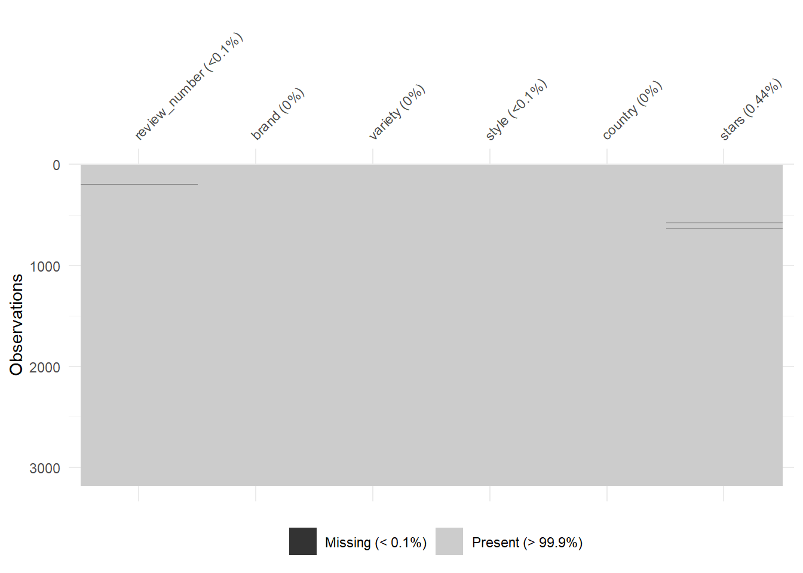
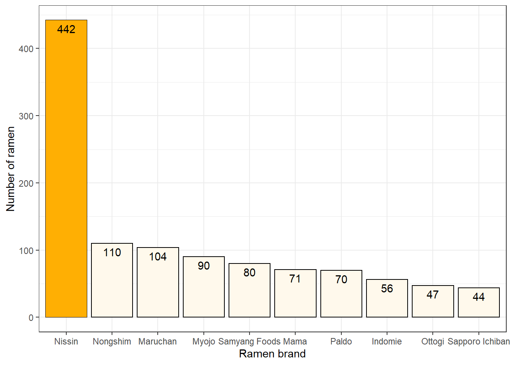
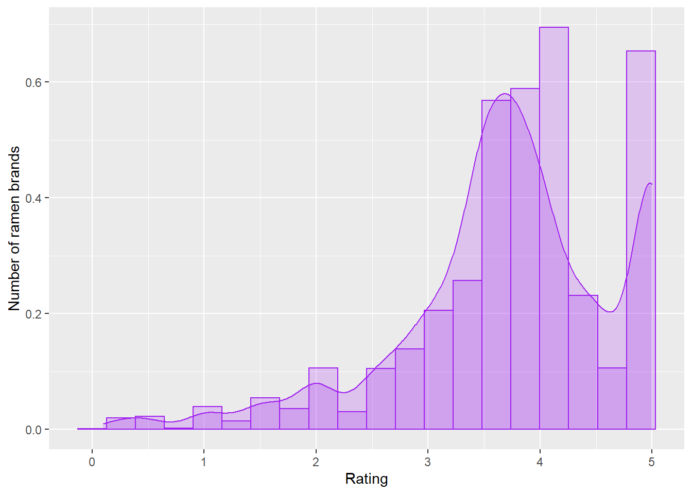

Purpose
- Computing summary statistics to explore the performance of existing ramen brands and to understand if there is any particular factor that can make a ramen better than another
- Construct interactive table using
DTpackage for best way to communicate the data - Create graphs using
ggplot2andplotly
Data description
ramen_ratings <- readr::read_csv("https://raw.githubusercontent.com/rfordatascience/tidytuesday/master/data/2019/2019-06-04/ramen_ratings.csv")The data used for this assessment is the
ramen_rating.csvdata set, originated from the Ramen Rater - a product review website for ramen enthusiast.This dataset provides more than 3,000 reviews on over 400 ramen brands on selected countries across the globe. Each record in the data set represents a single ramen review. The dataset contains 6 variables, including:
4 categorical variables:
brand: Brand of the ramen
variety: The ramen variety, e.g., a flavor, style, ingredient
style: Style of container (cup, pack, tray)
country: Origin country of the ramen brand
2 numeric variables:
review_number: Ramen review number
stars: Rating of the ramen ranging from 0-5 (5 is best, 0 is worst)
Let’s first try to clean the dataset:
starsis the most important variable in the data set as it contains information about the ramen quality. However, we can see that there are some missing observations presented in the variable. Hence it is imperative that we handle these values before jumping into the analysis:

We will filter out all missing values in the stars variable:
ramen_ratings <- ramen_ratings %>%
filter(stars != is.na(stars))- We also observed two missing observations in the
stylevariable. I did some research for two variaties and they appeared to be stored inpackstyle, so I have replaced the missing values with the associated style for these two:
| review_number | brand | variety | style | country | stars |
|---|---|---|---|---|---|
| 428 | Kamfen | E Menm Chicken | NA | China | 3.75 |
| 138 | Unif | 100 Furong Shrimp | NA | Taiwan | 3.00 |
ramen_ratings <- ramen_ratings %>%
mutate(style = ifelse(is.na(style), "Pack", style))- Moreover, it is noticeable that in the column
country, there are several countries that are either named incorrectly, duplicated or shortened so it can be a little misleading. I have renamed these values to the corresponding names, shown as below:
ramen_ratings <- ramen_ratings %>%
mutate(country = ifelse(country == "Sarawak", "Malaysia", country),
country = ifelse(country == "USA", "United States", country),
country = ifelse(country == "UK", "United Kingdom", country),
country = ifelse(country == "Phlippines", "Philippines", country),
country = ifelse(country == "Holland", "Netherlands", country))Data Analysis
We’ll begin with a summary table.
The following is used to compute the mean, minimum, maximum and median values for all the ramen categories that are available in each country, then store the calculated values in a neatly table format using DT package.
ramen_ratings %>%
rename(Country = country) %>%
group_by(Country) %>%
summarise(Average = mean(stars),
Min = min(stars),
Median = median(stars),
Max = max(stars)) %>%
datatable(options = list(paging = TRUE)) %>%
formatRound(columns = c("Country", "Average", "Min", "Median", "Max"), digits = 1)The Figure 1 shows a list of the countries that different ramen brands come from. This is quite surprised me seeing how diverse the ramen origins are. Furthermore, contrast to the common belief, Japan does not rank top over the best ramen in the world. In fact, Cambodia, France and Malaysia take over the place with an average rating of 4.2, whereas in Japan, the rate is only 3.9.
Are you curious which brand has the most varieties among all?
To help answer this question, I have done some data transformation. I have counted the number of varieties according to brand, and ranked them in a descending order to find out the top 10 most popular ramen brand.
brands <- ramen_ratings %>%
count(brand) %>%
mutate(Rank = rank(-n)) %>%
filter(Rank <= 10) %>%
mutate_if(is.numeric, round, digits = 2)ggplot(brands, aes(x = reorder(brand, -n),
y = n)) +
geom_col(color = "black", fill = "#FFF9EC") +
geom_col(data = ~filter(.x, brand == "Nissin"),
fill = "#FFAF03") +
geom_text(aes(label = n), hjust = 0.5, vjust = 1.5, color = "black") +
labs(x = "Ramen brand", y = "Number of ramen") +
theme_bw()
From Figure 2, we see that Nissin is having the highest number of varieties among all, followed by Nongshim and Maruchan. I have done some little research and found out that Nissin is Japan’s No.1 cup-type instant noodles brand and is currently available in around 100 countries and regions around the world (Nissin, n.d).
Now that we know which brand has the most varieties, do you also want to know which brand has the worst ramen ratings in the data?
The histogram below shows the distribution of ramen brands being rated from a 5-score scale.
ggplot(ramen_ratings, aes(x = stars)) +
geom_histogram(color = "purple", fill = "purple", alpha = 0.2, bins = 20, aes(y = stat(density))) +
geom_density(color = "purple", fill = "purple", alpha = 0.2) +
labs(x = "Rating", y = "Number of ramen brands") 
It can be seen that in Figure 3, the distribution of ratings is quite left-skewed. This means we are more likely to get better ramen than bad ones. On average, the rating score is 3.7. Therefore, ramen brands that are rated lower than 3 stars seem to have worse quality compared to the others. Let’s find out which brands fall under this category:
| Brand | Count |
|---|---|
| Nissin | 31 |
| Maruchan | 18 |
| Mr. Noodles | 13 |
| Vifon | 13 |
| Mama | 12 |
Surprisingly, as shown in Table 1, Nissin again ranks highest in the list with 31 worst rated ramen varieties. However, my assumption is that since the brand has a diversity of ramen ranges, this is not enough to consider it is the worst ramen brand.
As per proportion-wise, there are only 7.0135747% ramen from Nissin in the worst ramen list. In order to make a more accurate conclusion, perhaps it is better to compare the proportion to other brands’ proportion as well.
Further analysis, I want to explore how people from different continent prefer a ramen according to styles. There are 8 styles of ramen in the dataset: Cup, Pack, Tray, Bowl, Box, Restaurant, Can, Bar.
To do this, I have grouped countries by continent and calculated the number of stars for each continent.
asia <- c("Russia", "Thailand", "Japan", "Taiwan", "South Korea", "Hong Kong", "Malaysia", "China", "Philippines", "Vietnam", "Bangladesh", "Singapore", "Indonesia", "India", "Pakistan", "Nepal", "Myanmar", "Cambodia", "Dubai")
europe <- c("France", "Ukraine", "Netherlands", "Italy", "Poland", "Germany", "Hungary", "United Kingdom", "Finland", "Sweden", "Estonia")
oceania <- c("Australia", "New Zealand", "Fiji")
africa <- c("Nigeria", "Ghana")
america <- c("Canada", "United States", "Brazil", "Mexico", "Colombia")
corr <- ramen_ratings %>%
mutate(continent = case_when(
country %in% asia ~ "Asia",
country %in% europe ~ "Europe",
country %in% oceania ~ "Oceania",
country %in% america ~ "America",
country %in% africa ~ "Africa"))corr <- corr %>%
group_by(continent, style) %>%
summarise(mean = mean(stars)) %>%
mutate_if(is.numeric, round, digits = 2)g <- ggplot(corr, aes(x = style, y = mean)) +
geom_col(fill = "#EEC6A7") +
geom_col(data = ~filter(.x, mean == max(mean)),
fill = "#ea6834") +
labs(x = "Style", y = "Average Rating") +
facet_wrap(~continent, ncol = 2)
ggplotly(g)From Figure 4, it is quite obvious that different continent prefers different kinds of ramen styles, except for African region where ramen comes only in Pack. Asian people prefers ramen in a box, while Europeans and people from Australia and New Zealand likes ramen in a bowl. One interesting observation is the diversity of ramen styles in America continent, which is even more various than Asian countries. My hypothesis is that many people migrating from Asian countries to these areas also bring along their culture and perhaps, adjust the origin version to fit with the new culture. That’s why we have seen diverse ramen styles in these countries.
To summarise, in this blog, I have compared and contrasted the rating score across a variety of ramen brands, as well as explore how people from different continent favors ramen based on its styles.
References
C. Sievert. Interactive Web-Based Data Visualization with R, plotly, and shiny. Chapman and Hall/CRC Florida, 2020.
H. Wickham. ggplot2: Elegant Graphics for Data Analysis. Springer-Verlag New York, 2016.
Hao Zhu (2021). kableExtra: Construct Complex Table with ‘kable’ and Pipe Syntax. R package version 1.3.4. https://CRAN.R-project.org/package=kableExtra
Nissin (n.d). Brands. Retrieved from https://www.nissin.com/en_jp/brands/
Tierney N (2017). “visdat: Visualising Whole Data Frames.” JOSS, 2(16), 355. doi: 10.21105/joss.00355 (URL: https://doi.org/10.21105/joss.00355), <URL: http://dx.doi.org/10.21105/joss.00355>.
The Ramen Rater (2022). Ramen Ratings[Dataset]. https://www.theramenrater.com/resources-2/the-list/
Wickham H, Averick M, Bryan J, Chang W, McGowan LD, François R, Grolemund G, Hayes A, Henry L, Hester J, Kuhn M, Pedersen TL, Miller E, Bache SM, Müller K, Ooms J, Robinson D, Seidel DP, Spinu V, Takahashi K, Vaughan D, Wilke C, Woo K, Yutani H (2019). “Welcome to the tidyverse.” Journal of Open Source Software, 4(43), 1686. doi: 10.21105/joss.01686 (URL: https://doi.org/10.21105/joss.01686).
Yihui Xie, Joe Cheng and Xianying Tan (2022). DT: A Wrapper of the JavaScript Library ‘DataTables’. R package version 0.24. https://CRAN.R-project.org/package=DT
- Session info ---------------------------------------------------------------
setting value
version R version 4.1.2 (2021-11-01)
os Windows 10 x64 (build 19043)
system x86_64, mingw32
ui RTerm
language (EN)
collate English_United States.1252
ctype English_United States.1252
tz Australia/Sydney
date 2022-09-06
pandoc 2.18 @ C:/Program Files/RStudio/bin/quarto/bin/tools/ (via rmarkdown)
- Packages -------------------------------------------------------------------
package * version date (UTC) lib source
assertthat 0.2.1 2019-03-21 [1] CRAN (R 4.1.3)
backports 1.4.1 2021-12-13 [1] CRAN (R 4.1.2)
bit 4.0.4 2020-08-04 [1] CRAN (R 4.1.2)
bit64 4.0.5 2020-08-30 [1] CRAN (R 4.1.2)
broom 0.7.12 2022-01-28 [1] CRAN (R 4.1.3)
bslib 0.3.1 2021-10-06 [1] CRAN (R 4.1.3)
cellranger 1.1.0 2016-07-27 [1] CRAN (R 4.1.2)
cli 3.2.0 2022-02-14 [1] CRAN (R 4.1.2)
colorspace 2.0-3 2022-02-21 [1] CRAN (R 4.1.2)
crayon 1.5.0 2022-02-14 [1] CRAN (R 4.1.2)
crosstalk 1.2.0 2021-11-04 [1] CRAN (R 4.1.3)
curl 4.3.2 2021-06-23 [1] CRAN (R 4.1.2)
data.table 1.14.2 2021-09-27 [1] CRAN (R 4.1.3)
DBI 1.1.2 2021-12-20 [1] CRAN (R 4.1.3)
dbplyr 2.1.1 2021-04-06 [1] CRAN (R 4.1.3)
digest 0.6.29 2021-12-01 [1] CRAN (R 4.1.2)
dplyr * 1.0.8 2022-02-08 [1] CRAN (R 4.1.2)
DT * 0.24 2022-08-09 [1] CRAN (R 4.1.3)
ellipsis 0.3.2 2021-04-29 [1] CRAN (R 4.1.2)
evaluate 0.15 2022-02-18 [1] CRAN (R 4.1.2)
fansi 1.0.2 2022-01-14 [1] CRAN (R 4.1.2)
farver 2.1.0 2021-02-28 [1] CRAN (R 4.1.2)
fastmap 1.1.0 2021-01-25 [1] CRAN (R 4.1.3)
forcats * 0.5.1 2021-01-27 [1] CRAN (R 4.1.3)
fs 1.5.2 2021-12-08 [1] CRAN (R 4.1.2)
gargle 1.2.0 2021-07-02 [1] CRAN (R 4.1.3)
generics 0.1.2 2022-01-31 [1] CRAN (R 4.1.2)
ggplot2 * 3.3.5 2021-06-25 [1] CRAN (R 4.1.2)
glue 1.6.2 2022-02-24 [1] CRAN (R 4.1.2)
googledrive 2.0.0 2021-07-08 [1] CRAN (R 4.1.3)
googlesheets4 1.0.0 2021-07-21 [1] CRAN (R 4.1.3)
gtable 0.3.0 2019-03-25 [1] CRAN (R 4.1.2)
haven 2.5.0 2022-04-15 [1] CRAN (R 4.1.3)
highr 0.9 2021-04-16 [1] CRAN (R 4.1.2)
hms 1.1.1 2021-09-26 [1] CRAN (R 4.1.2)
htmltools 0.5.2 2021-08-25 [1] CRAN (R 4.1.3)
htmlwidgets 1.5.4 2021-09-08 [1] CRAN (R 4.1.3)
httr 1.4.2 2020-07-20 [1] CRAN (R 4.1.2)
jquerylib 0.1.4 2021-04-26 [1] CRAN (R 4.1.3)
jsonlite 1.8.0 2022-02-22 [1] CRAN (R 4.1.3)
kableExtra * 1.3.4 2021-02-20 [1] CRAN (R 4.1.3)
knitr 1.38 2022-03-25 [1] CRAN (R 4.1.3)
labeling 0.4.2 2020-10-20 [1] CRAN (R 4.1.1)
lazyeval 0.2.2 2019-03-15 [1] CRAN (R 4.1.3)
lifecycle 1.0.1 2021-09-24 [1] CRAN (R 4.1.2)
lubridate 1.8.0 2021-10-07 [1] CRAN (R 4.1.3)
magrittr 2.0.2 2022-01-26 [1] CRAN (R 4.1.2)
modelr 0.1.8 2020-05-19 [1] CRAN (R 4.1.3)
munsell 0.5.0 2018-06-12 [1] CRAN (R 4.1.2)
pillar 1.7.0 2022-02-01 [1] CRAN (R 4.1.2)
pkgconfig 2.0.3 2019-09-22 [1] CRAN (R 4.1.2)
plotly * 4.10.0 2021-10-09 [1] CRAN (R 4.1.3)
purrr * 0.3.4 2020-04-17 [1] CRAN (R 4.1.2)
R6 2.5.1 2021-08-19 [1] CRAN (R 4.1.2)
readr * 2.1.2 2022-01-30 [1] CRAN (R 4.1.2)
readxl 1.4.0 2022-03-28 [1] CRAN (R 4.1.3)
reprex 2.0.1 2021-08-05 [1] CRAN (R 4.1.3)
rlang 1.0.1 2022-02-03 [1] CRAN (R 4.1.2)
rmarkdown 2.14 2022-04-25 [1] CRAN (R 4.1.3)
rstudioapi 0.13 2020-11-12 [1] CRAN (R 4.1.2)
rvest 1.0.2 2021-10-16 [1] CRAN (R 4.1.3)
sass 0.4.0 2021-05-12 [1] CRAN (R 4.1.3)
scales 1.1.1 2020-05-11 [1] CRAN (R 4.1.2)
sessioninfo 1.2.2 2021-12-06 [1] CRAN (R 4.1.3)
stringi 1.7.6 2021-11-29 [1] CRAN (R 4.1.2)
stringr * 1.4.0 2019-02-10 [1] CRAN (R 4.1.2)
svglite 2.1.0 2022-02-03 [1] CRAN (R 4.1.3)
systemfonts 1.0.4 2022-02-11 [1] CRAN (R 4.1.3)
tibble * 3.1.6 2021-11-07 [1] CRAN (R 4.1.2)
tidyr * 1.2.0 2022-02-01 [1] CRAN (R 4.1.3)
tidyselect 1.1.2 2022-02-21 [1] CRAN (R 4.1.2)
tidyverse * 1.3.2 2022-07-18 [1] CRAN (R 4.1.3)
tzdb 0.2.0 2021-10-27 [1] CRAN (R 4.1.2)
utf8 1.2.2 2021-07-24 [1] CRAN (R 4.1.2)
vctrs 0.3.8 2021-04-29 [1] CRAN (R 4.1.2)
viridisLite 0.4.0 2021-04-13 [1] CRAN (R 4.1.2)
visdat * 0.5.3 2019-02-15 [1] CRAN (R 4.1.3)
vroom 1.5.7 2021-11-30 [1] CRAN (R 4.1.2)
webshot 0.5.2 2019-11-22 [1] CRAN (R 4.1.3)
withr 2.4.3 2021-11-30 [1] CRAN (R 4.1.2)
xfun 0.31 2022-05-10 [1] CRAN (R 4.1.3)
xml2 1.3.3 2021-11-30 [1] CRAN (R 4.1.2)
yaml 2.3.5 2022-02-21 [1] CRAN (R 4.1.2)
[1] C:/Users/trinh/OneDrive/Documents/R/win-library/4.1
[2] C:/Program Files/R/R-4.1.2/library
------------------------------------------------------------------------------